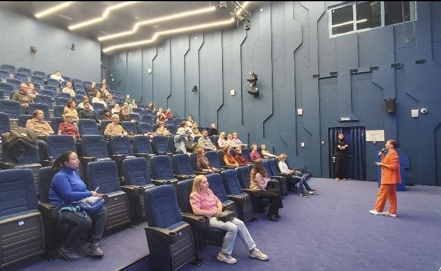

Понедельничная лекция
О лекции
Ключевые положения
Похожие маршруты
Тест публикации
Тест публикации 07.04.2026
О психологическом контексте встречи
## Transcript 900003
## Transcript 900003 - transcript: состоянии начинают психосоматики з…
## Transcript 900003 - transcript: состоянии начинают психосоматики заканчивая навязчивыми мыслями безответной любовью страхами раздражительностью всё это можно быстро и легко убраться я работаю собственным методом Я меньше разговариваю здесь я очень много говорю на консультациях и обладаю навыками кинезиологии Это позволяет очень быстро найти индивидуальный подход к каждому клиенту и решить его проблему на сайте прочитать отзывы Хочу познакомиться с вами вижу Знакомые лица поднимите пожалуйста руки Кто кто хоть раз был на моих лекциях и уже присутствовал раз Всех приветствую есть знакомые лица очень близко А теперь Поднимите руки кто меня первый раз видит близко живёте Вам удобно отношений а спорт похудение деньги подготовка к экзаменам уверенность в себе этот я выписала название лекций я сама горжусь что я прошла такой огромный цикл одиночество Бессонница мода сила воли зависимость творчества раздражительности обучение времени хорошего настроения мужчины женщины финансы Исполнение желаний то есть всё это я как бы каждую неделю перед сдачей кандидат 72 выступление это было именно только в Парке Горького И сейчас мы начинаем цикл лекций предварительно мы будем встречаться с вами Каждый понедельник 19:00 В этом зале и сейчас анонсировано четыре лекции если вам очень понравится Мы точно продолжим и это анонс следующих лекций я прочитаю чтобы было понятно у нас сегодня вводная лекция психология отношений с 13 апреля психология женщины на следующий понедельник потом мы будем разбирать Как найти идеального партнёра психология Когда вы входите и я считаю неотъемлемыми неотъемлемыми темами хороших отношений это психология любви к себе а психология личных границ психология конфликтов в целом Да как решать конфликты эта лекция будет полезна не только по отношениям и моя экспертность эмоциональный интеллект эмоциональный интеллект в отношениях это будет последняя заключительная лекция Она самодостаточная сама по себе но если мы стараемся и также Если Вы своим друзьям и знакомым расскажете про этот цикл Я надеюсь много интересных людей живёт и можно прийти на отдельную лекцию можно принести отдельно и если Вы кому-то расскажите Я уже эти лекции читала в Парке Горького но сейчас более такой осознанный подход будет к этому Вот так что поля мы начинаем потихонечку ко мне как специалисту есть какие-то вопросы всё ок да Хорошо А обычно Обычно мы начинаем в небольшом зале Но к концу уже люди начинают понимать мой стиль преподавания вся информация пропущена через себя через свой опыт и я вам какие-то нахожу моменты на какие-то акценты которые если я замечаю что мои люди на моих консультациях лучше понимают у них лучше складывается жизнь Я индивидуальный персональный провожу консультации но ко мне нередко приходит семейные пары которым я тоже помогаю решать их проблемы и какие-то случаи кейсы чтобы было больше понимания обо мне в этом году исполняется 46 лет в браке после развода мне пришлось У меня всё нормально и я за месяц до развода узнаю что всё не в порядке оказывается всё было не так хорошо как казалось было прочитано огромное количество книг огромное количество литературы пройдено огромное количество курсов и на своих ошибках я построила новые хорошие отношения совершенно противоположные по качеству первым но я не тот человек который с детства у которого всё получалось в подростковом возрасте я была той девочкой которую никто не обращал внимания потому что мне нечем было заняться когда мои друзья я сидел в университете и училась случайно получила красный диплом Но это немножечко горжусь но я не тот человек который родился и всё получилось и вам Рассказывал Ну просто Будьте собой просто Будьте такой какой вы есть я знаю С какими сложностями встречаются люди с какими проблемами встречаются люди я была и с той и с другой стороны отношений и поэтому как бы всё пропущено через себя и через опыт своих клиентов И вот сегодня мы начнём с вами и я была уверена что в течение года я выйду замуж потому что я была я классно выглядела я была обеспечена Я когда ездила на классной тачке я жила в самом центре я спала всю квартиру всё было супер Но это абсолютно То есть я упаковала себя внешне и технически как личный бред абсолютно полностью но это не мешало мне сидеть у психотерапевта предатель и считает что я самый вообще неудачливый человек на свете И никак не складывались отношения у меня не получалось работу над собой над своими ошибками Сходи в кучу специалистов терапевтов Прочитав огромное количество книг я сейчас имею собственную модель хороших отношений но Обратите внимание Я искренне считаю то что профессионал какой бы у меня опыт ни был Он подходит 20 25% людей мой личный опыт и я иногда встречаю людей в том что я могу помочь не только тем людям которые похожи на меня опыт Я могу помочь человеку справиться с этой проблем и профессионал в отличие от любителя отличается тем что я изучаю не только свой опыт Я изучаю много опыта и моя задача на консультациях потерять свою личность буквально исчезнуть и работать с запросом с ценностями с потребностями Моего клиента Да но бывают случаи прямо очень похожи на мой и Я с удовольствием со своими клиентами делюсь своими историями здесь с вами тоже буду чуть-чуть делиться потому что это лучше помогает нам понять друг друга Это моя любимая моя любимая комиксы где показывают насколько мы бываем сложными и простыми насколько некоторым легко найти отношение насколько мы бываем таким сложным и сложными головоломками которые никак не могут найти свою вторую половинку Скажите я обычно стараюсь взаимодействовать с аудиторией Почему вы здесь у вас проблемы вам нечем заняться в понедельник вам просто есть огромный классный цикл духовной психологии может быть мы его однажды на всякий случай к сожалению на всякий случай быстрые психологии абсолютно не разбираясь проблему её можно убрать иногда за минуту иногда за несколько встреч Вот Но есть очень много любителей которым очень важно понять механизм раскопать мы здесь это будем решать Но это конечно не тот психотерапия не будет но будет много интересных инсайтов Кто ещё может сказать почему эта тема заинтересовала Почему вы здесь на какие вопросы вы хотели получить ответы потому что я смогу сделать акцент профилактика Если вы не хотите чтобы завтра или через неделю или через 2 года ваш муж ушёл из семьи пожалуйста изучайте я была бы очень счастлива чтобы меня кто-то в 25 лет взял за руку и объяснил какие-то такие вещи которые мы часто учимся на своих ошибках иногда на ошибках кто не в отношениях Познакомься пожалуйста а кто не знает где он Вот вот мы учимся Как построить гармоничные отношения где глава и правильный абзац я вам сказала Идите в тонкой библиотеку Возьмите тот журнал Откройте эту статью и прочитайте эту страницу и там всё написано было бы классно но к сожалению так и не бывает и нужно глубоко и много разбираться в такой сложной теме А когда мы не можем разобраться в себе А когда мы хотим ещё разобраться в отношениях между двумя это часто сложные истории большинство психологов Я знаю Кто учится на психолога Ну иногда нужно полезно выйти чтобы построить хорошие отношения нужно сначала грамотно и качественно выйти из машины на самом деле это тоже важно успешные отношения складываются в двух парах оба партнёра прилично адекватные люди либо оба партнёра сумасшедшие найти свою вторую половинку это большое счастье но ко мне часто приходят люди не совсем равно смотрите очень классная поговорка Но сейчас она смотрите вряд ли там больше притягиваются не противоположности А дополняющие друг друга качество если я очень общительная ко мне притянется очень интровертный муж который будет долго и Внимательно слушать мои разговоры вообще не понимаю о чём я говорю но если я познакомлюсь с таким же вряд ли мы продержимся долго если не нашли вторую половинку может быть не там ищете Да иногда я была сама долго в состоянии поиска между двумя браками и вот иногда нужно там искать Вот мои любимые комиксы по отношениям это очень яркая классная картинка насколько мы разные иногда мы находим человека совпадает но не всё полностью и поняв себя нам намного легче понять какие потребности Мы хотим закрыть какие ценности у нас должны совпадать чтобы заранее предвосхитить Они через год-два травматических отношений Как как эти отношения строят Ну такое общий слайд общая информация о том что мы сейчас на самом деле находимся в такое время когда если раньше 100 лет назад и вы знаете что когда рождается девочка уже ей подбирают жениха и родители ответственность каждого человека самому найти своего партнёра Но даже я знаю по-моему в армянских или восточных семьях девушка даже если она Ну как бы не самая главная вот в посёлке или в городе невесты ей обязательно найдут жениха и семья отвечает кому и куда пристроить вторую половинку А мы живём в таком обществе Когда Каждый из нас сам ответственен за поиск за выбор и даже девушка а муж обидит девушку у неё обязательно найдётся двоюродный троюродный брат или какой-то дядя который обязательно её будет защищать и вот этот страх ну лишний раз обидеть оскорбить унизить то есть они с одной стороны могут только для этого должна быть очень большое обоснование но у них в восточных землях намного больше чувства защищённости стабильности и какой-то вот как бы они с детства понимают что всё хорошо И когда я вижу восточных девушек не только из наших странах за границу еду у них как будто всё нормально самооценкой и у них всё хорошо а мы выросли в такое культуре где очень много критики мы не знаем что такое хорошо но мы прекрасно знаем что такое плохо Мы знаем что у нас неправильно мы знаем что ещё не так и мы внутри очень уверенно предоставлены сами себе И в тоже время есть сейчас большое количество сайтов знакомств есть иллюзия выбора иллюзия выбора и это очень сильно создаёт вот этот эффект что выбор есть и кажется что где-то там оно есть и может быть я ещё пропущу и даже если я встретил хорошего человека но всё равно кажется что где-то там через 35 кто будет ещё лучше да но вот этих классных ребят или классных девчонок у них очень большое количество выбора Я считаю что на 20% симпатичных мужчин или крутых женщин Или наоборот крутых мужчин симпатичных женщин есть 80% в поиске И я очень мечтаю отношение это точно не просто и отношение нужно учиться и к сожалению большинство наших родителей это не ну не самый идеальный пример для подражания и вы знаете при этом я знаю семьи где были идеальные отношения у родителей и Ну ко мне приходила несколько девушек на консультацию и они не могут встретить мужчину который будет соответствовать этому стандарту вместе формально но я знаю своих родителей при этом не могут нередко но это тоже встречается кому-то из нас я всё испортила а не научила Как правильно и мы пытаемся годами ходить кто-то к психологам читать книги смотреть блогеров и понять как не надо кто-то не знает как надо всякое бывает Если обратить внимание и этот призыв к тому что нужно начинать с себя но можно найти себе такого же сумасшедшего чтобы ваши тараканы быть вместе и друг друга компенсировать это тоже но я искренне считаю только повзрослев побед и выздоровел психологически у меня получается построить здоровые отношения И сколько бы я со здоровыми условно со здоровой психикой не давала совет людям немножечко спасать на психике они как будто не действуют и то что написано в многих книжках говорят блогеры большинство этих Советов подходят для здоровых людей если вам эти советы не подходят есть шанс что обратить внимание к психологу вопрос риторический ходить на лекции Татьяны Но на самом деле базовая психотерапия личного А там как пойдёт А какие у нас Бывают отношения Давайте какие у нас бывают проблемы в отношениях конфликт Давайте вспоминаем Какие бывают проблемы после того как я долго терплю есть люди которые конфликтуют А есть люди которые терпят конфликты И они начинают и внешне Они вроде бы всё у них хорошо но внутри они уже сгоревшие изнутри а страх привязанности Да есть люди которые не могут ничего сделать И мне нравится но и уйти они не могут есть проблема повторяющихся сценариев когда мы второй муж третий а он всё бьёт пятый шестой а он всё пьёт Да и мы знаем всякие такие истории это частые истории иногда не глобальных сценариях на мелочах но повторяются и тоже нужно задуматься с чем это связано одиночество и страх одиночество почему это два разных есть люди которые сейчас находятся в одиночестве и это большая проблема а есть люди которые находятся не в счастливых отношениях и Они вроде бы не одиноки но они очень боятся выйти из отношений потому что страх одиночества которое будет между отношениями для них невыносимым и вот этот страх останавливает их завершить то что долго и много лет не нравится и есть просто одиночество А есть страх одиночества неизбежны мы это должны понимать и важный элемент гармоничных отношений это мой личный лайфхак научиться мириться после ссоры и лайфхак заключается в том что когда вы входите только в отношениях очень полезно рассказать своему партнёру как с вами можно и нужно мириться в чём проблема потому что очень часто я вижу проблемы не в том что люди уже не хотят Помириться а в том что девушка говорит а он не извинился или он мне подарил цветы или она вот ходит Молча Я не знаю как к ней подойти и часто человек один или второй мужчина или женщина пытается сделать первый шаг в хороших отношениях Если вы заранее скажите обижена но он придёт пойдёшь в кафешку Я уже не могу устоять да Или кому-то нужны цветы подарить кому-то нужно обнять кому-то нужно извиниться кому-то нужно проговорить кому-то нужно выйти прогуляться и на Я не знаю на рыбалку съездили в магазин сходить чтобы успокоиться но когда вы знаете тот способ который в прошлых отношениях срабатывал и вы когда у вас хорошие отношения потому что очень часто мы не можем выйти из конфликта Как мне найти что мне нужно сделать чтобы я обиженный и обиженный могла растаять и на всякий случай даже какие бы ссоры не были Вот это я для себя упоминала что написала что на семейной консультации счастливой пары смеются когда ссорятся вот если ко мне пришла Семейная пара и очень там вот ругается но в какой-то момент они начинают смеяться Я понимаю что не всё потеряно Для меня это очень важный сигнал о том что есть связи шутку эти конфликты ссоры это очень сильно тоже уменьшает те неизбежные конфликты которые есть в каждой паре есть пять основных причин для ссоры у любых пар давайте мы их запишем а потом я уже открою Я хочу чтобы вы задумались и вспомнили себя или что-то вспомнили Вот вот кто знает Секс 100% быт 100% и Последний пункт это как по поводу денег или по поводу секса родственники давайте так родственники и друзья Вы очень часто тема Почему вот это приходит мужик и говорит Моя мама решила что нам надо переехать или девушка приходит подружки что-то не нравится и когда последнее слово или аргумент за вашими друзьями родственниками вы не можете между собой договориться это не редкая причина для ссор в отношениях понятно То есть часто это не самый родственники Да но когда начинается конфликт интересов и нужно выбирать между своими родителями и своим супругом и почему-то мнение мамы папы бабушки дедушки Или друга важнее чем ваше это очень часто причина это Слава Богу что вы с этим не сталкивались но это не редкая причина проблем и вот это Почему мой муж доверяет больше не своей жене а близким или друзьям быт Родственники друзья и воспитание детей это самые частые популярные причины конфликта Ну ревность зависимости А всё я поняла спасибо это не самые частые причины и очень часто они присутствуют и обязательно их добавлю незрелых не может справиться со своим конфликтом у каждого из нас находится своя причина Независимости кто-то пьёт кто-то курит кто-то жрёт кто-то в компьютерные игры играет у кого-то другие есть много разных ещё громадных вот просто когда мы не можем справиться со своим состоянием то мы уходим хоть какую-то радость и в зависимости появляются так вот моя любимая и нам очень важно её разобрать а потом мы сопоставим это вдвоём когда есть Триада триединство Ну в общем какие-то всякие трилогии И когда я разбираю психику Я понимаю что у нас есть три глобальных блока психологических проблем Первое - это физические животные уровне это наши тела Но почему здесь интересный уровень животных потому что животные у них есть инстинкты у них есть какие-то потребности они Вот специально справа и масло говорит что есть потребность в безопасности есть физиологические потребности но животных есть потребность они входят в телесный уровень проблем следующий уровень который я выделяю - это социальный это наша культура это наше воспитание Это где мы родились это те правила которые нам культура семья в нас воспитывает именно культура говорит что хорошо что плохо что правильно что неправильно да И если посмотреть на пирамиду принадлежности в зависимости от того насколько у меня хороший статус насколько я хорошую работу заработок У меня есть я себя хорошо или плохо чувствую Но здесь в социуме очень важно отношение сколько много у меня друзей какая у меня работа это всё социальный такой Пласт который большой часть человеческой жизни занимает и третий уровень - это духовный уровень Я здесь выделяю тело Разум и эмоции и эмоции как сигнал о том что для нас важно и здесь очень важно задуматься О нашей индивидуальности уникальности о наших ценностях и приоритетах и бывает что я родилась в семье военных но внутри я чувствую себя балериной или Я родилась в семье врачей а внутри Я чувствую что это не моё и это большое счастье когда мои духовные ценности приоритеты очень совпадают с моими родительскими установками и традиции моей семьи но все мы так или иначе в подростковом возрасте с этим сталкиваемся и среди знакомых видим как сложно иногда найти баланс между своей индивидуальной индивидуальностью и теми требованиями которые приносят нам общество и когда мы говорим об отношениях нам нужно понимать что эти три уровня есть И эти три уровня есть и у одного и второго партнёра мы здесь пишем духовно у меня такой дсж нам нужно понимать что есть совместимость по телесюжет уровень - это когда я нравлюсь его родителям Да мои друзья одобряют насколько мы устроены в социуме финансово Да мой муж меня обеспечивает а у него статусная работа Да у нас есть где жить Потому что когда вопрос денег или социальный вы такой идёт это большая большая проблема несовместимости И там очень много конфликтов когда мы из-за финансовых или каких-то ещё вещей сильно ссоримся и не можем продолжать Отношения это когда мы на одной волне Когда нам есть о чём поговорить когда у нас общий интерес когда мы разговариваем о политике и в это время у нас общий взгляд на ситуацию ты не вызывает внутреннего конфликта я вам хочу сказать что это большое Счастье когда все три совпадают Когда у нас сексуальная совместимость Энергетическая совместимость здесь же к примеру когда есть социальная совместимость когда я нравлюсь его родителям и друзьям Когда вы достаточно зарабатывать денег когда мы можем себе позволить какие-то вещи и чувствовать себя и бывает что и поговорить есть о чём и социально всё устроено например пожилые люди но они уже не хотят друг друга а кто-то из партнёров хочет или бывает что и секс прекрасный и вроде денег достаточно а поговорить ни о чём или бывает что и секс классный и поговорить ещё а денег нету Когда мы начинаем анализировать семейные отношения когда ко мне приходят люди с запросом проблемы совершенно по-разному решаются Когда у нас нет общих интересов когда мы с социальными стаканами или когда у нас телесная несовместимость но хорошая новость состоит в том что у каждого из нас есть приоритетный уровень кому-то очень важно чтобы была сексуальная совместимость это сексуальная совместимость и он может закрыть глаза что с девушкой не о чем поговорить а бывает что девушки Тогда я могу понять что вот на эту зону Я могу закрыть глаза и я реально встречала людей которые ты меня социальный момент очень важный и когда-то я была в очень много девушку клиентка моя говорит когда ты была очень скована к финансовых условиях и Сейчас может быть ей Неважно как её О чём мужчина с её мужчиной говорить но ей важно чтобы он социально обеспечил и для неё она на второй план ставит вот этот уровень духовный Но зато она обеспечивает стабильность со своими подругами кто-то из мужчин удовлетворяет своими любовницами и самое большое несчастье когда все три уровня а что вы там забыли в этих отношениях Почему вы терпите Да я ей помогала выйти из этих отношениях со здоровыми ощущениями кстати хочу сказать что у каждого психолога как у каждого хирурга есть своё кладбище да у нас есть свои кладбища отношения которые мы не смогли спасти А есть и счастливые пары которые очень благодарна и хороший волне разошлись и нашли друг другу свои половинки друг друга мучить и у меня есть несколько таких примеров Однажды скажу а есть такая астролог из Давай поженимся Володина кто слышал про неё Ну есть такая женщина или 10 назад она выпустила книжку про астрологические совместимость и всех своих мужиков подарки рождения для которых сексуальная жизнь очень важна и пока он сексуально удовлетворён он может вообще закрыть глаза на весь ваш быт на все ваши какие-то вещи чтобы может быть не самое идеальная мать не самая классная там не лучше всех готовить но пока вы его сексуально удовлетворяете он будет вас любить ценить и уважать пока не найдёт кого-то надеюсь ты никогда не найдёшь А есть мужчины которым очень важен Уют готовка насколько вы заботливая жена и пока вы выполняете его вообще всё равно что вы делаете или не делаете в постели Проблема в том что пока вы это всё выполняете всё хорошо но если вы начали посмотрели Instagram или почитали книжку и сказали Я это не буду делать начинаются проблемы и я реально знаю такие семьи где реально мужчина он ценит свою жену как мать Как хозяйку и я знаю что у него есть любовница но он от неё не собирается уходить он очень ценит вот этот архетип вот эту роль ту которая выполняет его жена Ну если она ей кто-то расскажет Зачем ты готовишь Давай Займись с ним классным сексом то он может очень сильно разочароваться спросить работает либо открыть книжку и узнать какие потребности лучше удовлетворять и Где можно расслабиться - это большое дело потому что быть супер хорошей женой и классный секс и классно готовить и классно там все всё вместе отдыхать Иногда я знаю немало женщин которые стараются но они тратят два в три раза больше сил чем это необходимо и зная приоритеты своей второй половинки делает туда акцент кому-то важен совместный отдых Да и может быть нам говорит нечем но отдых когда мы ездим в горы или когда мы ездим на рыбалку или когда мы вместе играем в компьютерные игры я знала семьи но они вместе они команда они очень классные Да И вот большая большая большое счастье совместимость Да и Когда ваша приоритеты совпадают то здесь понятно да что хорошие отношения когда два плюсиков есть плюсик тоже надо как это исправлять Но если два плюса и Это ваши приоритеты это большое счастье большое тогда всё плюсы Но это огромная работа обоих вот и Наша задача задуматься первое что у меня в приоритете что для меня важно потом спросить у партнёра дайте ему время подумать Потому что в шоке а потом через какое-то время вернуться к этому разговору и понять что если нам обоим неважно социальный уровень Да важнее там к примеру сексуальное или здесь порт совместный или совместные какие-то идеи ценности совместный бизнес например то перераспределить свою энергию и не тратить на то что неважно Не ценно потому что мы часто и роли вот этой хорошей жены и когда мы начинаем рассматривать любые отношения любые проблемы с этих трёх уровней становится более Чётко и ясно что можно и нужно исправить такие вопросы 100% роскошных отношений и хотите не строите Всё я разрешаю это выходит смотрите когда мы удовлетворяем животный уровень потребностей животных то есть я устала я отдохнула я голодная я поела Я хочу в туалет Я сходила в туалет идёт плюс один минус один Ну то есть это условная такая единица энергии которая Мы тратим на то чтобы ну потратили силы восстановились когда мы живём в социуме и нам приходится очень много подстраиваться под других и много что терпеть мы тратим в социуме есть такое негласное правило проблема этого надо учиться но в социуме так сложилось что если вы хороший и правильно это и так само собой разумеющееся и за это не нужно хвалить но в социуме нам постоянно создаёт чувство вины и обиды какие-то упрёки ревность о том что вы сделаете что-то не так И большинство из нас внутри понимаешь что что-то не так мы держим маску Вот это благополучное эмоциональное что всё хорошо мы вежливы доброжелательно они нас могут раздражать и всё остальное как часто это в работе с клиентами с родственниками происходит И когда я испытываю одну эмоцию а снаружи показываю другую нервная система тратит в два раза больше силы энергии Понятно когда я испытываю одну эмоцию а показываю другую мою нервную систему тратит два раза больше всего энергии Если вы злитесь и проявляете злость Вы очень быстро разряженный показываете обиду Это намного быстрее проходит чем когда вы держите Вот эту вот маску Когда мы занимаемся теми делами которые нам нравятся в основном положительные если в социуме Паша нас приучили отталкиваться от негативных эмоций Но если вы хотите идти к себе вам важно смотреть вот куда меня что мне интересно что меня радует Какие Какое творчество какие кружки то что нравится вашей подружки Может вам совсем не нравятся А что именно мне нравится большая проблема когда ничего не нравится но когда я занимаюсь своим делом условно у меня возникает в поток многим из нас нужно выходные заняться тем важным делом чтобы набрать силу чтобы у нас хватило энергии на целую неделю того чтобы выполнять эти обязательства Играйте ролик который не всегда нам соответствует и вот здесь вот здесь у нас удовольствие животное чувствует удовольствие удовлетворение Социум Я доволен собой как я доволен А когда я занимаюсь тем что меня радует я чувствую радость и нам очень важно отвечать чем радость отличается от удовольствия радость - это когда я иду к своей цели когда я делаю своё дело когда я понимаю ради чего я живу и это такая стратегическая эмоция она намного вперёд смотрит и Обратите внимание когда я не чувствую радости я хочу почувствовать хотя бы удовольствие если я не чувствую радости то я иду съем пирожок если я не чувствую радости то пойду хотя бы в компьютерные игры посижу или в шоке если я чувствую что в моей жизни В каком направлении Ну там есть большое количество проблем блоков и таких зажимов которые мешают вам почувствовать себя Потому что вы настолько заданы чаще всего социальными нормами социальными ожиданиями социальными требованиями что вы не выйдя из этого сжатого панциря и можете понять куда Вам двигаться если животное живёт Здесь и сейчас оно в моменте я либо хочу в туалет либо не хочу либо я выспалась либо я не выспалась Я хочу в туалет и спать как я буду слушать Вот и в моменте я это чувствую сразу социальные у нас эмоции Они немного вперёд они такие тактические я наперёд думаю накажут и накажут оштрафуют поругает сделают замечание или нет И мы часто что-то не делаем просто чтобы не вызвать негативную эмоцию окружающих а духовные эмоции они очень стратегические если для меня ценность здоровья я сейчас ограничиваю себя в бургере или в какой-то еде чтобы спустя 10 лет быть здоровой класс на всякий случай у меня Сегодня третий день голодания о том что я в своём возрасте так классно выгляжу у меня хорошая кожа бла-бла-бла все дела И я сейчас у меня есть сыр и я У меня появляется смысл ради чего я сейчас терплю дискомфорт какое-то ограничение кто-то мечтает стать хирургом и он сейчас идёт в поликлинику работать на маленькую зарплату чтобы получить опыт который в платной клинике он не получит и все его спрашивают Почему ты получишь Деньги получила Удовольствие что ты делаешь А он ради цели появляется смысл Сейчас терпеть и вот духовные эмоции они очень стратегические они очень далёкие Но от предвкушения что я могу получить я чувствую радость и когда у нас нет радости мы чувствуем вот это я не знаю ни одной Я изучаю эмоции больше 20 лет я не знаю ни одной теории мультик который вы меня удовлетворяла и есть просто есть четыре базовых эмоций на всякий случай я туда поеду сажусь в поезд я не на балете но я в предвкушении что Завтра я пойду на свой любимый или какой-то там спектакль на который давно мечтал пойти я с утра собираюсь и всем Рассказываю что я скоро пойду на балет Но я ещё не на балете Я радуюсь что я там ну когда я сижу на балете Я получаю истинное удовольствие от музыки от танцев от всего это атмосферы и потом ещё 2-3 дня Как же так я сдал экзамен у тебя цель получить диплом или стать кем-то радость хочу в туалет хочу секса хочу спать социально я должен Да я должна быть хорошей женой Я должна ребёнка отвезти в школу я должна накормить всех Да я должна А духовная По какому принципу живёт тоже модальный глагол только могу я могу Да я хочу рисовать но могу ли я рисовать и в духовном это про какие-то долгосрочные перспективы И когда у вас с мужем есть общая какая-то идея какой-то смысл да это очень сильно объединяет общая ипотека Да очень объединена Вот Но это какая-то долгосрочная перспектива мы сейчас понимаем ради чего мы отказываемся себе во всём Да чтобы жить потом разменять её на двоих или мы отказываемся потому что большая радость когда он поступил образование и потом в старости нас будет обеспечивать когда я говорю о духовном давайте так когда я говорю о животном Я люблю рисовать треугольник как фундамент когда я люблю говорить о ролях я рисую квадратики это и рамки в которые нас заталкивают а когда я люблю говорить о душе я рисую кружочек и в каждом из нас всегда одновременно присутствуют эти три аспекта и когда мы говорим о психологической зрелости личности я хочу вам показать насколько вот эта табличка она частично соответствует нашему духовному росту смотрите когда ребёнок идёт в садик в садик то он там получает удовольствие и он радуется играет спит иногда днём и у него всё в жизни хорошо когда ребёнок идёт в школу ему начинают объяснять что есть социальные правила и он должен он не может прогулять школу он должен сделать уроки он должен поднять руку прежде чем спросить что-то да то есть появляется много правил которые учат ребёнка жить в социуме жить в коллективе когда ребёнок подрастает и он становится подростком мы его начинаем спрашивать а ты хочешь можешь да кто-то может рисовать у кого-то технические способности кому-то нравится программирование кому-то нравится дизайн и мы когда ребёнок подходит к уровню университета или колледжа Мы хотим узнать что лично ему нравится не всех родителей почему-то это интересует но большинство родителей всё-таки в современном мире хотят чтобы ребёнок делал то что ему нравится то что ему нравится на работе должен у нас это школа когда я говорю я считаю что это университет то есть в университете Каждый из нас выбирает свою авторизацию а какие следующие два уровня после того как мы университет закончил вот у нас есть хочу должен могу что мы начинаем делать когда университет заканчивается делаем что работать а для общества что мы делаем Это большое счастье когда служение совпадает с моими ценностями Я служу мне это нравится мне никто не заплатил и мне никто не обижал или не испугал и служение это когда я искренне понимаю что я Я служу и я выполняю свой долг кто-то хирург кто-то Строитель Да кто-то там арт-директора кто-то спортивный тренер и это большое счастье чувствовать своё служение и вот на работе Мы служим А следующий уровень когда мы заслужили Википедия Ну как бы если я строитель я могу взять наставника Обучаю это такой наставничество я хочу сказать что если это здоровый этапы развития личности но есть люди которые живут и работают они взрослые но они живут в режиме Я хочу получить удовольствие и никому ничего не должен есть люди которые всем должны но они не понимают что они хотят или могут есть люди которые могут что иногда в теле взрослого человека может находиться подросток психологический который живёт на режиме хочу должен но он как будто уже и не там не может и и туда не пришёл любой кризис любой Конфликт это когда я уже по-старому не могу а по-новому ещё по старому не получается когда мы переходим вот здесь происходит определённый кризис Я хочу сказать что если глубоко копнуть есть взрослые люди которые На первый план но они к примеру это взрослые детки такие которые вкусно поесть посмотреть сериальчик там полежать на диванчике они сходили на работу для того чтобы получить деньги они сходили на работу чтобы их отпустили в отпуск для этих самое большое счастье если им дают отгулы Я раньше отпускают с работы и это нормально и Они получают удовольствие есть люди которые должны и они вот среди них очень много спортсменов военных предпринимателей которые они не спрашивают тебя им сказали Вижу цель не вижу препятствий они должны должны но когда начинаешь говорить понимают что они могут Ну когда ребёнок с детства знает что он хочет быть врачом или с детства знает что он будет танцором или там программистом да И тут чаще всего есть какая-то идея которая человек живёт ребёнок с детства хочет стать поваром Хотя в его семье никого нет И когда мы говорим про отношения понимает На каком уровне мировосприятия отношусь и На каком уровне мировосприятия находится мой партнёр очень важная вещь Потому что часто конфликт возникает Не потому что мы не можем договориться не услышим а потому что человек который живёт идеей у которых могло на первом месте есть идеи большое счастье Когда у них есть проект совместный бизнес совместный какое-то дело и если человек идейная женщина встретила мужчину который только должен она пытается вдохновить объяснить рассказать про какие-то стратегические вещи что скажи что делать Что надо делать я сделаю Да я должен я сделаю или встретились два должен говорить Я буду работать а ты будешь убираться большое счастье и человек который говорит Надо работать найти своё предназначение пытается объяснить девушке которая хочет на Мальдивы ничего делать что вообще-то в жизни есть другие ценности не понимаю и важно то что не получится Так что человек живёт на уровне хочу и вы ему объяснили как Что такое служить нужно пройти все уровни их можно быстро пройти если вам 40 лет А вы на уровне должен то пока вы не проведёте режим могу и потом служу вы не перепрыгивать на ощущение обучения но бывает что рождается так словно взрослая душа которая с детства она намного быстрее эффективнее и много учится она в два в три раза быстрее проходит большое количество курсов и уже в 3540 лет она начинает быть мастером экспертом в какой-то области кто-то в спорте да кто-то в психологии кто-то Ну в любой сфере есть такие как бы выскочки но это не вы они просто чтобы в 40 лет начать обучать то что другие знают 60 нужно пройти два в три раза быстрее этот путь у них просто другая нагрузка и Бывает такая влетевший девочка она уже служит она уже обучает и для неё кстати для девочки обучающей самое большое счастье встретить мужчину который должен самая большая проблема когда она пытается его объяснить ему что он тоже должен развиваться нет формула такая мы начинаем осознавать Где я Где мой партнёр не пытаться его переместить на свою ветку реальности на своё мировосприятие это та задача которую мы должны осознать если так сложилось что вы мудрая женщина у вас такой не совсем мудрый мужчина то вопрос как когда вы это осознали И как вы оказались в этих отношениях максимально большое счастье иметь схожее восприятие мира вот эти люди которые хочу они работают до 18:00 и они работают ради от Я не спрашиваю когда корпоратив или когда будет обед вот эти люди работают по должностным инструкциям вы договорились они сделают не была в договоре с них никакого спроса вот этих людей могу их можно вдохновить иди грамоты сказать что они лучшие и вообще они такие трудоголики Но если их идея с вашей совпадают они вам будут очень сильно и классно помогать но чаще всего это такие будущие самостоятельно предприниматели которые они что-то реализованы люди которые уже поняли что не могут и успокоились они просто служат они просто сделают своё дело если надо хирургу очень хорошо и качественно он делает не из-за того что вы деньги заплатил А из-за того что это важно Это большое счастье вот быть в этом месте я Обучаю Просто я знаю много людей которые уже отлетают отлетели такие обучающие но они пытаются Вот все вот этим предыдущем людям объяснять как правильно смотреть на мир но пока но они Не объясняют как дойти до этого уровня А когда мы начинаем смотреть на мир с разных этажей с разных уровней и мы понимаем и осознаём какого уровня мой партнёр то мы не просто его ругаем или как-то А мы понимаем что ему нужно пройти психотерапию пройти свой путь и вообще задать себе вопрос Если я вот На таком уровне работы например учительница работает а ей не нравится что её муж где-то Тут ещё то это нужно то есть не всегда легко и можно переделать мужа если вы понимаете что для вас это невыносимо или вы ускорились и пока вы вместе выходили замуж у вас всё было хорошо А через 20 лет вы осознали что Вы далеко ушли вперёд это ваш выбор либо оставаться с ним терпеть либо идти дальше Потому что когда мы идём вместе мы идём далеко Когда мы идём одни мы идём быстро и выйти из отношений но когда вот понятно что важно осознать свой уровень восприятия мира осознать уровень восприятия вашего партнёра соотнести либо помочь догнать если не сильная разница либо принять его таким какой он есть либо выйти из отношений и искать человека не просто который у вас физиологический или социально устраивает а здесь очень важно духовное восприятие секрет ваших отношений все прочитаю но Обратите внимание мы сами очень часто тянемся к позитивным разносторонним похожим на нас и тем кто принимает нас если мы хотим чтобы к нам тянулись нужно быть позитивным разносторонним формула успеха оказывается всё очень просто когда я хожу Я очень люблю ходить в кафе в рестораны я очень часто люблю наблюдать за парочками которые сидят иногда приходят супруги у них дети они сидят час или полтора за одним столом друг напротив друга я искренне за ним наблюдаю и ни одного взгляда в глаза в глаза Они формально выполняют роль там воскресного завтрака или пятничного ужина но они вообще не смотрят в глаза друг друга а бывает что такие весёлые позитивные и не всегда красотки но я вижу что мужчина тянется к весёлым к позитивным к радостным девчонкам которые умеют отдыхать расслабляться и у мужчин проблем хватает на работе когда он приходит домой и мы такие уставшие или раздражённый и ещё какие-то он ищет части на стороне А когда мы учимся быть позитивными да большая проблема будем в процессе наших лекций разбирать Как быть позитивными и разносторонними то даже если наш мозг к нам не тянется нам начинает тянуться другие мужчины вот или женщина и я просто хочу сказать что очень многие люди которые находятся в отношениях они тянутся к таким людям и вот есть я есть очень много других чьё мнение Меня интересует Есть люди которые подстраиваются под всех а сами себя не знают и когда они меня спрашивают А как понять ну как бы а как можно всем не нравится да их очень расстраивает что вот этому человеку они нравятся А вот этому человеку нравится но это практически невозможно Я люблю и приводить такой пример что когда мы в детстве мы сейчас не говорим что мне нравится Я буду то это нормально что вы не нравитесь девочки из консерватории А если вы любите классическую музыку и одеваетесь как такой прилежный Посетитель литературы но вряд ли вы поправитись там рэпером или рокером И когда вы определились со своим стилем музыки ваша задача начать нравится тем людям у которых похожи мировоззрение И когда вы понимаете что это нормально что вы мне нравитесь и они Вам не нравятся то 3 четверти приоритет и понять В каком ореоле обитают такие же сущности или такие же люди Да это большое искусство Вот и вообще классно если вы счастливы вообще хорошо но это вопрос не конкретно но когда мы не пытаемся понравится сначала понимаем музыки Я люблю Какой вид отдыха Я люблю Какие у меня ценности приоритеты то я ищу людей с похожими ценностями Потому что сейчас если мы вернёмся к этой табличке если представить старый образ жизни там 1.000 лет назад люди жили на уровне выживания А был большой период когда нужно было просто выживать нужно было просто размножаться нужно было просто сеять собирать их и всю зиму ждать когда придёт следующий сезон люди очень долго жили в режиме Что важнее не я лично а обществом партия там коллектив было ваше мнение очень долго наших родителей как минимум не интересовало и для многих из них вообще непонятно как можно думать о себе Когда кто-то вокруг страдает и это большое огромное поколение выросло И большинство из вас находится на стыке этих двух сфер сейчас растёт огромное поколение которое не знает что они хотят не знают что они должны но они точно знают что им нравится не нравится И вот эти индивидуалисты это проблема большая проблема и просто 15 лет спрошу что он хочет а он мне нафиг посылает и проблема родителей в том что после 15:00 уже поздно вот если есть книжка После трёх уже поздно а есть книжка после 15 уже поздно и если вот в школьное время не сформировать у ребёнка обязательства ответственность какую-то дисциплину то в 15 лет очень проблемно сложно это спрашивать А родители думают что это раз у них есть то это какой-то Ген который передаётся нет этот вопрос себе редко задавали А сейчас вы должны понять но это всё равно целостное целостная среда и уметь знать что я хочу куда я иду что мне нравится но уважать общество уважать чужое мнение уметь взаимодействовать с этим это большое большое искусство если животное живёт в режиме инстинктов это постоянное напряжение и Многие знают в этом состоянии на работе чтобы всё было хорошо а духовный уровень вот здесь Бей Беги замри социальный Терпи А там что тоже не заканчивается С чего у нас духовное учение учат прими прими себя Прими других Да и Научись этим взаимодействовать но есть люди которые принимают всех других а себе не знают ничего И вот принять себя со своими недостатками комплексами со своими индивидуальности со своим желанием сделать 1000 татуировок в носу не чувствовать себя хорошо и найти себе такого же партнёра возможно в этом счастье и принять себя принять другого но для меня принять других это уже следующий уровень Когда мы будем говорить о любви к себе мы будем Вот про эту духовный уровень очень много к этому возвращаться я не буду сейчас вот эти вещи я хочу следующий потому что мы идём мы знакомимся с другим человеком и когда мы познакомились я и другой у нас происходит то есть чтобы нам светить и войти в отношения Мы должны найти что-то общее и у нас возникают определённые совместное дело Мы вместе работаем У нас есть что-то общее И если мы чувствуем притяжение то мы начинаем это и мы начинаем часто делиться общими интересами и у нас как бы мы не только объединяем и расширяем индивидуальность друг друга и становится шире я была много раз за границей А мой партнёр ни был Мы поехали Всё показала и он не просто общий интерес он обогатился он стал больше но в большинстве отношений проблема заключается в том что нам ещё что-то не нравится или в супруги и мы говорим Не общайся со своими подружками не одевай Вот это платье не ходи на эту вечеринку Да у меня аллергия не общайся с этими друзьями там не ходи в свой гараж и мы начинаем где-то расширять диапазон своей личности а где-то сокращать и часто когда мы очень сильно объединили какие-то вещи но какие-то вещи в себе подавили рано или поздно вот эта часть личности это часть души начинает очень сильно бунтовать и возмущаться и чаще всего это происходит в каком возрасте после сорока большое а иногда лучше сейчас он свою индивидуальность проявит и уже поймёт что он может и хочет и будет самостоятельная Личностью но да это очень неприятно большинство родителей Ну есть момент такой хочу сказать что мы иногда настолько сливаемся с другими настолько отказываемся от себя что мы становимся Вот такими вот слитно проблема когда мы расстаёмся и мы не оставили вот эту личность индивидуальность происходит огромная пустота и у нас не существует Везде где мы были везде всё что мы делали всё напоминает о нём это больно невозможно этого больше нету И вот на консультации приходят вот такие личности которых нужно заново собирать и всё что они делают это ассоциируются с прошлым с теми отношениями Я хочу сказать что большинство мужчин тоже бывает они не хотят идти на концерт джаза но они рады за вас что вы что вы пришли они не пойдут с вами на Когда вы приходите и рассказываете Насколько Вы получили удовольствие довольны они за вас Если нормальные отношения радуются и вот когда у вас есть свой мир свои интересы которые вы удовлетворяете не с этим человеком это нормально А многие Женщины считают Ну как же мы должны всё вместе делать Мы должны вот так Или так но если вы действительно знаете как Близнецов это большое счастье но если вы ради партнёра отказываетесь и он ушёл не сливаться А помнить и знать что есть потребности которые вы можете удовлетворять сами с собой есть вещи которые вы можете удовлетворять со своими подругами друзьями есть вещи которые вы можете делать ещё как ты где-то но всё Не всё что не нравится вашему супругу Вы должны от этого отказываться если у него аллергия на сардельки то вы просто идёте в гости в жертву несчастный муж ушёл от вас ничего не осталось и считается что он должен терпеть но мы живём не в то время когда мы должны это можно было предъявлять 30-40 лет назад но сейчас эти претензии не работают и мы вступаем в отношения чтобы чувствовать радость счастье и удовольствие друг от друга а радость счастье удовольствие - это когда наши ценности совпадают и у нас есть совместные положительные вещи что это секс отдых или совместный бизнес это уже второй вопрос но я вас призываю не сливаться и не ограничивать и не отказываться от себя от того что вам важно Если для вас что-то неважно вы отказались это не ваша личность а если вы отказались А это какой-то большой компонент вашей жизни там подруга какой-то интерес или ещё что-то то рано или поздно что-то внутри начнёт сопротивляться раздражаться и боли Ну так как это произошло Давно вы не отнесёте эти две вещи и вам даже будет непонятно из-за чего у вас такое подавленное плохое состояние настроение а это просто произошёл накопительный эффект и душа уже пытается прорваться через болевые ощущения показать вам что вы не ну отказались от себя и не идёте к своей жизни к своей мечте а есть те роли которые мы играем роль никогда не соответствует вашей личности вы как личность большая-большая душа но как роль вы можете быть одновременно и ребёнком и супругой и матерью Да и на работе быть с кем-то быть женой или не женой но важно то что Какую роль мы не выполняли Она всегда меньше чем вы но часто роль в определённые рамки и границы заводит и мы должны понимать что есть часть роли которая Нам нравится выполнять Я люблю приводить пример с женой вот жена жена любит готовить и это частью Видите вот эта часть роли она внутри кружочка находится и мне даже не надо если я жена которая любит готовить мне не надо заставлять готовить я буду готовить кормить и даже люди будут уже говорить Да ладно не надо я буду всё время пытаться причинить никакого труда не заставляет что я должна готовить мне это нравится мне Как жена должна убираться мне это как личности не нравится Ну как часто бывает когда Мы выполняем роль и никто не знает что мне это не нравится я убираюсь Я играю эту роль я выполняю редко слышу на семейных консультанте что Супруг не в курсе что жена не любит убирать А как он не в курсе Потому что ни разу ему не сказала она через 10 лет начала возмущаться раздражённо говорить Какого фига но она наверное с первого дня знала что она не любит убираться ну бывают такие люди которые не любят убираться Я к тому что Мы выполняем роль но если я выполняю роль которая мне нравится Я трачу в два раза больше энергии А если пополняю роль которая мне нравится Я получаю и в каждом у каждого из нас есть какие-то понимания Какую роль должен играть мой супруг на 8 марта или нет должен мы должны ли в отпуск вместе лететь или нет И мы его предъявляем но ему тоже какая-то часть нравится и не проблема ему выполнять А какая это часть не нравится проблема состоит в том что большинство из нас выполняют роли Особенно с самого начала когда мы всегда пытаемся показать с лучшей стороны но мы не сообщаем другому насколько нам комфортно легко или интересно это делать но большая проблема многих отношений по крайней мере в прошлом о том что люди не переходят на личность если я не люблю убираться и мой муж любит меня я ему говорю я не люблю убираться Ну давайте помогу уборку Давай ты Отдохни сейчас Потом сделаешь да то он учитывает мои интересы мои состояния и пытаются подстроиться или я знаю что ему там не нравится ездить к моим родственникам но при этом я знаю что он старается и я его за это благодарю Давайте разберём три важных слова благодарю не вдохновляю Чем отличаются принципиально Подумайте вы говорите человеку Благодарю и вы вдохновляете в чём Ключевая разница это про одно и то же но есть принципиальное отличие Благодарим за то что уже сделано хвалим за то что человек делает вдохновляет то что человек собирается сделать Да и если он что-то сделал Какой мой муж Молодец как он хорошо сделал и как его вдохновлял То есть когда мы гордимся кем-то вот гордимся детям и мы начинаем другим рассказывать про это Я когда звоню своим мужем для меня важно чтобы мой муж слышал что я его хвалю и мой когда я с отцом разговариваю и он слышит что я рассказываю как кому-то другому о том Какой он молодец он понимает что я не вру Потому что когда мы часто хвалим или благодарим Многие считают что это ну Вежливость это он просто так да это уже привычка но когда мы слышим что нас хвалят по отношению и для других мы понимаем что наверное там больше искренности у нас меньше сомнений что нам действительно Ну за нас рады и нами гордятся то есть когда мы гордимся своими детьми мы начинаем рассказывать другим какие они Молодцы когда мы гордимся своими супругами мы рассказываем своим близким какие они будут то есть мы хвалим в присутствии или для других а Желательно чтобы он обязательно это слышит и вот очень важно что когда вы что-то делаете А если вы делаете нет никакой ценности нормально сообщить что я не люблю быть женой но я не люблю жене вот это вот эту часть я это делаю и тогда когда смотрите есть роль и личность она как-то относится есть факты события А есть отношение к фактам есть я убралась Я знаю реально девочка убраться кому-то по кайфу приготовить что-то по кому-то по кайфу с детьми поиграть позаниматься кому-то ещё кому-то вообще ничего не по кайфу когда вас за всё должны благодарить вопрос Я призываю вас Если вы догадываетесь что вас любит то значит ему небезразлична ваше состояние а не то что вы делаете Если ваше состояние безразлично вы сообщили какие части обязанности вам легко даются Какие сложные Какие очень сложно то давай я сейчас Давай я сейчас помою посуду А ты сходи в магазин Или давай я сейчас с собакой погуляю А ты сейчас там разберись в гардеробной допустим я имею в виду что если вы какую-то часть делаете неприятную супруг ваш знает и он это ценит он не против помочь вам где-то Ну просто мы будем на лекции по личным границам разбирается как подробно и детально вот эти вещи делать но Наша задача не только благодарить но иногда сообщать вашему о том что вы ждёте благодарность Вы хотите чтобы это ценили для вас важно чтобы это замечали и мы часто по умолчанию подразумеваем Ну раз я выполняю роль то он что-то должен или раз я это делаю где-то внутри Мы сначала делаем делаем делаем делаем делаем делаем потом начинаем истощается а потом уже чувствуем раздражение что это не замечает Но если вы входите в Новые отношения у вас есть шанс сделать всё сразу правильно А если вы понимаете Если вы резко не обращала внимания выносишь мусор Как ты помогаешь с детьми как ты гуляешь с собакой Ты знаешь я понимаю что для меня это важно и ты мне это делаешь Я это Ценю и понимаете слова Спасибо из семи звуков семь букв и иногда Проще сказать слова Спасибо и человек вам ещё 20 минут будет сказать слова Спасибо и человек не захочет вам мыть посуду и умеет благодарить Это самый лёгкий самый крутой энергообмен который вы можете делать не всегда можно купить не всё но личностно поддерживают друг друга в сложном и замечать вот эти хорошие вещи это то искусство которое поддерживает наши отношения на хорошем и качественном уровне здесь понятно просто прислушайтесь к себе это как любую профессию там продавцы кому-то нравится общаться по телефону говорить а кому-то нравится бумажки перекладывать но профессия подразумевает И то и другое вопрос Куда я делаю акцент что я делаю но если можно это сделать и получить благодарности чтобы люди замечали что вы это делаете Мы знакомимся Потом мы начинаем общаться Потом появляется заинтересованность и прикосновение некоторые Эти люди проходят за 2 часа но иногда это растянута во времени история да потом подразумевается влюблённость построении отношений усиление чувств и Обратите внимание когда доверия о будущем Да и мы иногда хотим чтобы наши мужчины принимали решение о на этапе заинтересованность вот такие есть этапы отношений на каждый проходит определённые чувства переживания там потом будем разбирать Ну просто вот мне важно чтобы мы это проговорили немножечко А смотрите очень часто люди пытаются построить отношения пока эмоционально внутри они не попрощались со старыми и очень часто Я знаю когда мужчина любит женщину он вышел из отношений и он пытается построить отношения с другой женщиной Но внутри девушкой со своей женой и когда я эмоционально с другой женщиной играй роль ничего здоровый нормального не получится и вот уметь оставить старое не можете сходить к психологу не может сходить к психологу сходить в Татьянин и он быстро безответную любовь убирается за две встречи просто колоссально и быстро есть способ который я нашла Сама очень часто мешают там быть здесь и сейчас воспринимать человека таким какой он есть И большинство людей которые из отношений вышли но внутри ещё вот эти есть вот эти какие-то ниточки какие-то эмоции очень быстро начинает выходить на новый уровень просто Задумайтесь об этом и Задайте себе вопрос Если у вас отношения строятся нет ли у вас там какого-то незавершённого процесса перезагрузится и осознать получит опыт Что значит осознать полученный опыт это значит понять себя понять работу над ошибками конечно с возрастом из-за этого полученного опыта всё сложнее иногда строить отношения но чаще всего именно вторые браки более удачные Потому что те кто сделал работу над ошибками на автомате потом удивляемся что не так и вот это перезагрузится и нормально побыть минимум 2-3 месяца в одиночестве минимум полгода Вот это внутренняя рефлексия они пытаются хвататься За первого встречного после там двух недель расставания к тому что если мы хотим качественно построить отношения перезагрузка и Осознание полученного опыта либо самостоятельно либо с друзьями либо с психотерапевтом это важный этап Да мы будем искать подходящих лекциях и я хочу сказать что когда я говорю через год мы определяемся выходим ли мы замуж или нет Я искренне считаю что надо год побыть в отношениях чтобы Понять насколько человек может быть он сейчас хороший а у него осенью Там психическое обострение какое-то да Либо наоборот сейчас весна и он просто влюбился а у него там отпустит Всякое бывает именно год пройдя через все вот эти вот циклы можно понять что он и этой весной следующий любит именно вас они следующую птичку в следующем езде если через год определились через 3 года по-хорошему должен появиться ребёночек И это нормальный цикл период к этому времени Почему часть пара в 3 года распадается потому что либо они детишек завели Ну я считаю что вместо детишек может быть совместное дело я знаю немало пары у которых нет детей но у них совместное дело совместный бизнес они годами как с ребёночком с ним возится и это тоже очень сильно объясняет если у вас ничего общего за 3 года не появилось распада Конечно можно в любой момент это нормальное состояние когда вы конечно и после 50 точки Да если вам 55 лет и вы 3 года прожили вместе Ну если вы хотите быть вместе интересными друг другу это один из способов сближения через 70 лет становится Скучновато скучно Мы уже всё знаем привыкаем И происходит часто кризисы и нужен какой-то вот там другой уровень переходить и на другом уровне воспринимать Ну это такое частный Кризис 3 дня было я говорю какая совпадение я не знаю что там я искренне наверно Как войти в эти 20 мы это не будем обсуждать на этой лекции мы походу будем на это на следующей лекции обсуждать потому что это меня ещё минут на 40 сейчас понесёт вот я быстренько сейчас вот смотрите класс Когда у вас есть деньги которые мне нужно чтобы понимали мама любит сына муж любит жену и как они у меня ни одна женщина в моём кабинете мужчины если он любит он любит очень сильно Просто у них вот тут такой вот есть такой психологии слово импринтинг он её запечатление и даже на глаз Может на 3 года вы знаете запечатлеться и быть очень верным и любящим мужем 3 года потом то как женщина любит ребёнка ни один мужчина не способен так любить ребёнка как женщина способна Любить своего ребёнка просто нет такого как бы такого материнского инстинкта а кого у нас ребёнок любит бабушку А если дед бабушке то собаку понятно всё раз ещё раз сначала ребёнок любит бабушку домашки сейчас ребёнок он не любит он будет любить своих супругов вас всё вот если вы хотите чтобы вас кто-то любил безусловно Обращаемся к маме если мамы нет ну то вы старший член семьи и просто несёте на себя ответственность просто запомните девочки что в отношениях я искренне считаю что если вас муж любит ваш мужчина вас любит то он вас будет терпеть и в ПМС и во время беременности когда вы 3 года на него внимания не обращаете Когда вы его детей няньчити Да это большое счастье когда мужчина любит сколько детей может любить мама я придумала ответ А как вы можете любить одновременно двух детей Вот в этом я не знаю как там мне ручки у них устроено чаще всего один но ненадолго Вот Но это дальше уже поддерживать отношения дальше И следующий лайфхак следующий лайфхак вот у нас мужчина любит женщину у нас говорят в два раза более эмоционально чем мужчин А теперь важный момент когда мы любим кого-то Мы очень сильно и внимательно состояние другого другого человека неважно это домашнее животное ребёнок супруг да И если ваш мужчина вас очень любит то он чувствителен к вашему состоянию X2 Просто когда я люблю своего сына Я очень переживаю Как он себя чувствует О чём он волнуется Да мы иногда себя Ставим на второе место оставим на первое место нашего партнёра но давайте мы что сделаем женщина когда радуется мужчина чувствует женщина и когда вы его благодарите за подарки Когда вы его хвалите за то что он сделал за то что Какой молодец он радуется X4 что происходит когда вы его ругается X4 Когда вы его критикуете обвиняете возмущает и если вас мужчина любит он очень X4 чувствителен к вашим эмоциям А когда женщина сочувствует мужчине наблюдение по физике это не описано но смысл в том что мы нас женщин мужчина любит и мы начинаем эмоционировать и он очень сильно настроен на наше состояние и ему важно ваше положительные эмоции и он очень переживает Когда вы испытываете отрицательные эмоции но с возрастом и в отношениях мы часто забываем благодарить забываем делиться радостью даже если вы просто рады что он вам купил шубу недостаточно сказать спасибо нужно долго и много радовать шуба Извините можно 3 дня и радоваться или всю жизнь Я вам серьёзно говорю девочки Если вы хотите чтобы ваш мужчина был счастлив рядом с вами Вы должны даже банальные вещи ваши радостные вы сходили подружка Спасибо Ты молодец я тебе благодарна это уже записанное автоматическая формула но вы знаете даже это автоматическая формула намного приятнее чем ничего Вот и у нас должно быть два положительных момента на один сегодня в душ сходили мы сегодня выспались вы сегодня вкусный салатик сделали вам сегодня какой-то сон приснился Сам иди какая-то пришла в голову чем он должен занять и вы делитесь этой радостью с ним мужчина испытывает X4 это формула поэтому не забывайте радовать своих мужчин своим счастьем своей радостью всем тем что у вас происходит внутри Это я взяла эти слова у известного семейного психолога Лидер защитник добытчик роль женщины-матери жены и богини и когда жена выполняет роль лидера и добытчика кто мужчина почему-то не выполняет роль жены и богини и почему-то он вы забрали его роль и он лежит и не понимает чем ему заниматься и это большое искусство не мешает мужчине - Это что такое что такое богиня как это быть богиней потребности у мужчины быть свободным быть нужным и самим собой а потребности женщины безопасность благодарности близости и если вы у вас Вы женщина вы запоминайте что нужно вашему мужчине Если вы мужчина запомните что нужно женщина хочу ли я чтобы этот человек был свидетелем моей жизни хочу ли я делиться с ним горем и радости хочу ли я быть свидетелем его жизни Да потому что вот это наблюдение ты не только продовольствие ты не только про радость Но это проживание и про совместное такое наблюдение расширение своего опыта если мы хотим здоровые отношения нам важно стать здоровыми важно вовремя остановиться Когда вы входите в здоровые отношения если вы сами нездоровы скорее всего пропустите когда у меня были нездоровые отношения у родителей Я даже не понимаю Где терпеть где молчать и входя в отношения с нездоровым человеком Я прохожу женщина уже давно вышла и Я помираю слишком поздно когда я уже глубоко в отношениях И когда я недовольна что ко мне так относится ну где вы были предыдущие полтора-два года когда он так себя вёл А вы терпели и терпели вы потому что вы видели как ваша мама или Как ваша бабушка или Как ваша тётя терпит и вот этот момент пропуска Да это момент такого что у вас определённые блоки у вас определённые Ну как бы установки которые нездоровые и вы не замечаете Что делать с вами а другая женщина здоровая она просто вышла давно из этих отношений и давно уже строят другие счастливые отношения такой маленький элемент на который Обратите внимание Будьте понятны и предсказуемой для себя или партнёра это про то что научите его мириться с вами объясните что для вас важно Расскажите на начальном этапе какой вы человек ты лучше сразу проговорите Какая Вы на самом деле чем потом Спустя время узнать что совсем другой человек поймите что для вас важное что смириться отпускать Ну это я искренне считаю что самое лучшее качество мужчины - это терпение вот когда они нас любят и терпят это большое счастье на сегодня Мы закончили Я надеюсь вам понравилось Я надеюсь что вы Расскажите вашим друзьям У нас здесь ещё очень много свободных мест мы будем разбирать психологию женщины и мужчины на следующих лекциях и как найти идеального партнёра через 3 недели и дальнейшее лекции тоже здесь встречаемся ровно в 7 вечера по понедельникам и Подписывайтесь Telegram канал Если у вас есть вопросы Вы можете в телеграме их озвучивать если они интересные я буду в начале лекции отвечать важный момент на личные вопросы Я отвечаю Только на консультациях не надо ко мне подходить и спрашивать А что мне делать с моим мужем или как мне там сейчас расстаться или А вот меня муж обижает пожалуйста это наличных консультациях на сайте Но если у вас есть по теме вопросы мероприятия где я ещё участвую Где мне можно найти и также 19-20